Kenji Mizoguchi (1898–1956) is celebrated for the flowing long take and the moving camera. Ugetsu (Ugetsu Monogatari, 1953), set during Japan’s civil wars, follows two peasant men whose ambitions—for wealth and for samurai status—lead their families to ruin and draw one of them into a ghostly love affair. We will focus on how movement, of both the camera and objects within the frame, dramatizes his cinematic space.
There are many great traits in Mizoguchi’s cinematic storytelling. We will focus on movement: both the camera (point of view) and objects, such as floating boats, often seen in long shots. In Mizoguchi’s films, a scene is often composed of a single long take. Naturally, shots that contain movement tend to be longer. In such shots, extended camera movements or the movement of objects within the scene effectively dramatize Mizoguchi’s cinematic space. In Ugetsu Monogatari (1953), we can observe the mastery of his style.
Neer sharpens the same observation in formal terms: in Mizoguchi’s best work, “characters, entities, and actions appear as elements within larger compositional arrays, like the bits of glass in a kaleidoscope. Stately camera movements and careful choreography continually reorganize these patterns” (Neer, p. 479). As Rivette put it, in Mizoguchi “the slightest shift inflects all the lines of space” (Neer, p. 479).
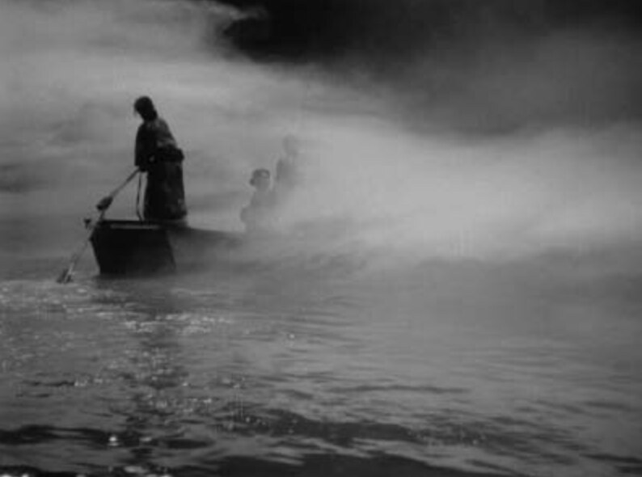
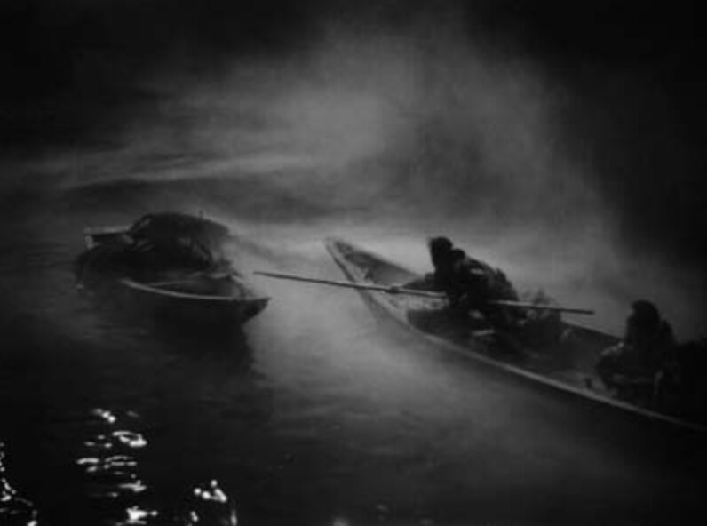
The boat slides away from the land, leaving the wife and child who move horizontally along with it. The shot captures the wife and son as they follow the boat’s movement until they can no longer keep up. Somehow, this moment convinces us that it may be the last time the husband will ever see them.
Another version of a scene with a boat and the land separating families comes from another film by Mizoguchi, Sansho the Bailiff. A mother is stranded from her two children by kidnappers using a boat. While in Ugetsu the boat slides sideways away from the land, in Sansho the boat is paddled away from the land into the depths on the screen.
Neer puts this in formal terms: Mizoguchi’s shots routinely make “graphic flatness coincide with pictorial depth in a sort of mobile Gestalt” (Neer, p. 479). The two boats, one moving across the screen plane, one receding into it, are exactly the two cinematic axes the camera makes legible.
“Genjuro returns home. He does not know that his loving wife, [Miyagi], is dead. He enters, looks in all the rooms, the camera panning with him. He moves from one room to the next, still followed by the camera. He goes out, the camera leaves him, returns to the room and frames [Miyagi], in flesh and blood, just at the moment when Genjuro comes in again and sees her, believing (as we do) that he didn’t look properly and that his gentle wife really is alive.” — Jean-Luc Godard, quoted in Neer, p. 493
Neer’s gloss makes the technical point: “the audience shares Genjuro’s error” because the pan, not a cut, performs Miyagi’s reappearance (Neer, p. 493). The camera movement is the conjuring trick.
Mizoguchi employs many highly effective cinematic techniques, often involving the dynamics of moving elements. As the name suggests, movies are a medium of moving images. Mizoguchi’s style, which maximizes the impact of motion, is well suited to the art of cinema.
A Greek auteur, Theo Angelopoulos is known for his wide camera pans and movements. He uses a one-scene-one-shot approach to filmmaking. He has cited Mizoguchi as a major influence, along with Orson Welles. In The Traveling Players (1975), a cinematic chorus of modern Greek history, there are effective wide pan shots.
Mizoguchi seems to use his long one-scene-one-shot pan to depict turnings of life that cannot be avoided. It is like a 360° observation of reality (of the protagonists). Watch The Traveling Players (1975) and think about why Angelopoulos used them!
A Russian auteur (a refugee in Italy, Sweden and France), Andrei Tarkovsky is known for his dreamlike long shots and the use of earthly elements such as rain and fire. He cited Mizoguchi as an influence. In Nostalghia (1983), there are long shots that capture the simple movement of a character.
The most memorable, with a Mizoguchi-like long camera movement (tracking), is the pacing in the ruins of an ancient hot spring pool. The antagonist is on a mission to walk from one side of the old empty pool to the other with a candle in his hands, without allowing the flame to be extinguished. He must pace several times until he succeeds. Tarkovsky’s camera follows the antagonist by tracking horizontally and faithfully recording the entire duration until the end. It is easy to associate Mizoguchi’s camera movement with Tarkovsky’s: he too often captures a motion as a long cinematic action by showing its completion in real time.
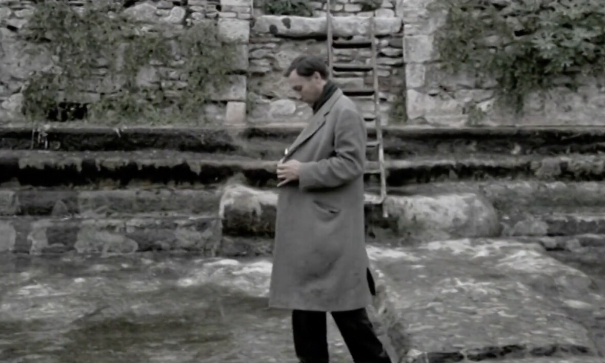
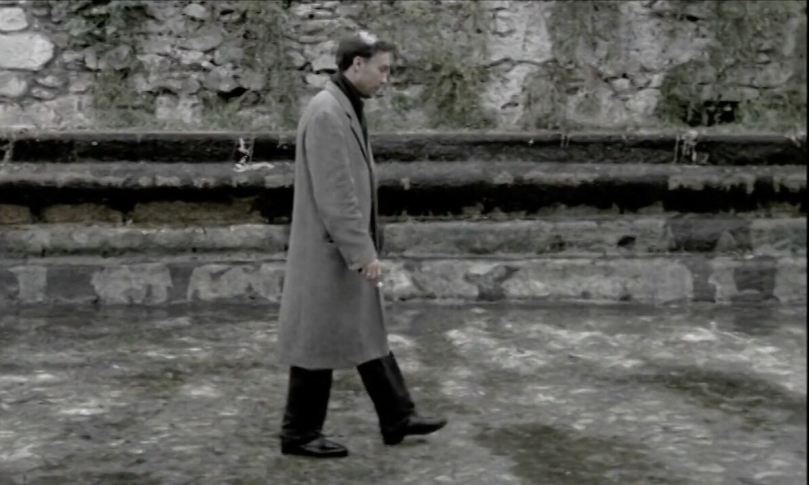
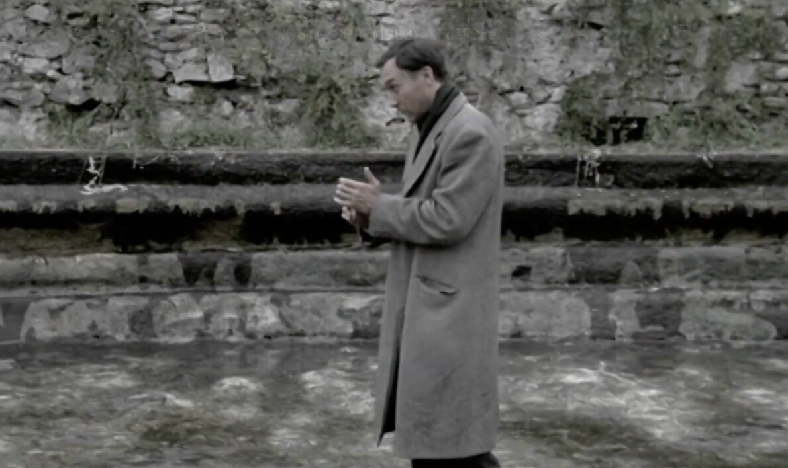
A Chinese auteur, Wong Kar Wai is known for his dreamlike transitions (and other nonstandard ones), similar to those in Mizoguchi’s Ugetsu (especially the snake-ghost sequence). He often mentions the enduring influence of Mizoguchi and Ugetsu on his cinematic style. In the Mood for Love (2000), widely regarded as his most acclaimed film, also contains impressive dissolves and other transitions combined with camera movements. He often plays with the opacity and transparency, or dimness and brightness, of image contrasts on the screen in relation to time-space transitions.
The ending sequences of 2046 (2004) feature dissolves, camera pans, tracking and transparency. 2046 is a very loose sequel to In the Mood for Love, with a loosely structured timeline that conveys dreamlike memory fragments. The combination of dissolves, multidirectional camera pans, and the transparency of object images throughout the sequence delivers its unsettling ending with images of floating space and time.
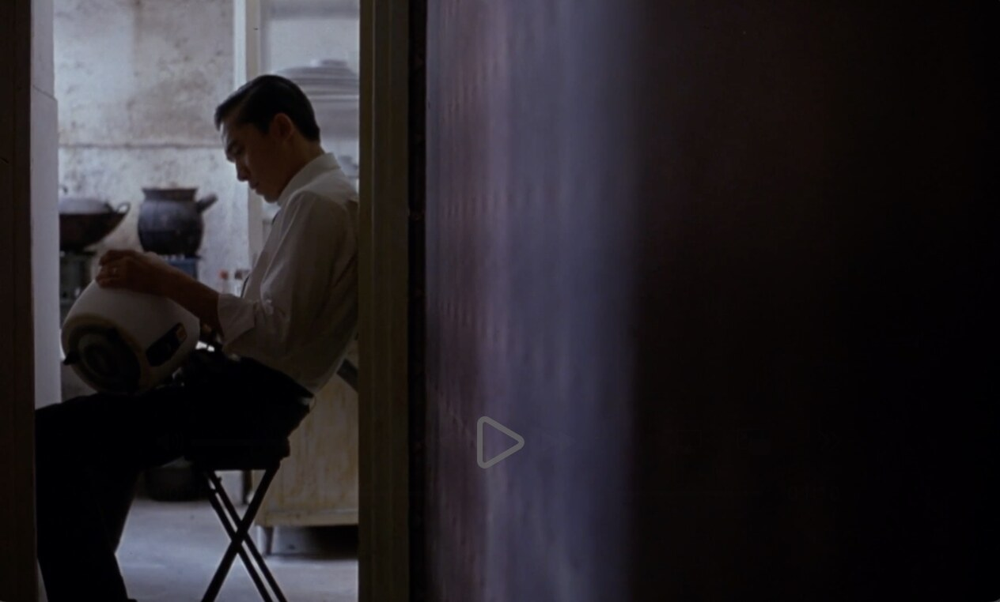
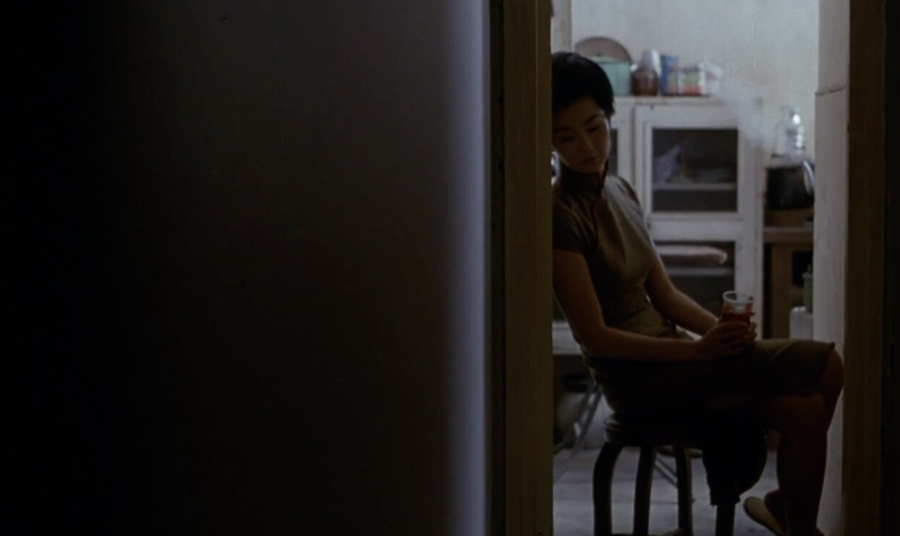
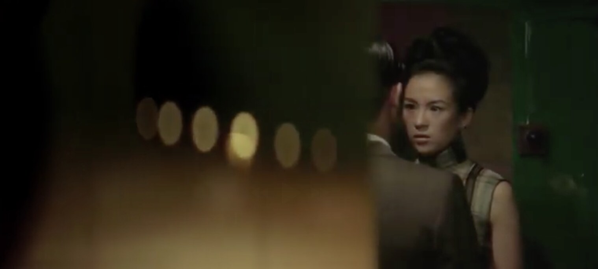
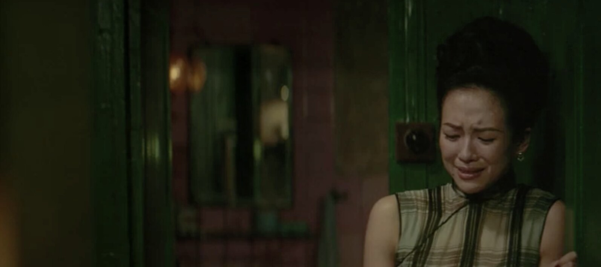
As we have read in his writing on Mizoguchi, Godard praises him. Besides internalizing Mizoguchi’s influences (tracking and panning), Godard also modeled the ending scenes of two of his films, Le Mépris (1963) and Pierrot le Fou (1965), after the ending of Mizoguchi’s Sansho the Bailiff as a tribute. In Le Mépris, Godard even shows a tracking-shot setup on screen before his own camera pans to the left toward the sea.
Godard’s admiration is no aside. He declared Ugetsu “Mizoguchi’s masterpiece, and one that ranks him on equal terms with Griffith, Eisenstein and Renoir” (quoted in Neer, p. 475). The pan-to-the-sea endings of Le Mépris and Pierrot are not just citations; they answer that judgment in the only currency that matters here, which is moving images.
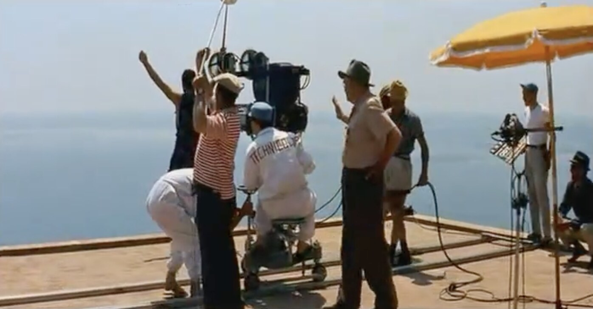
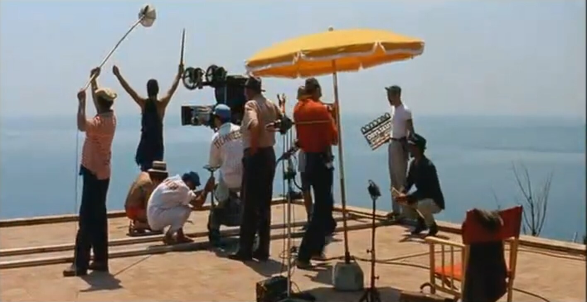
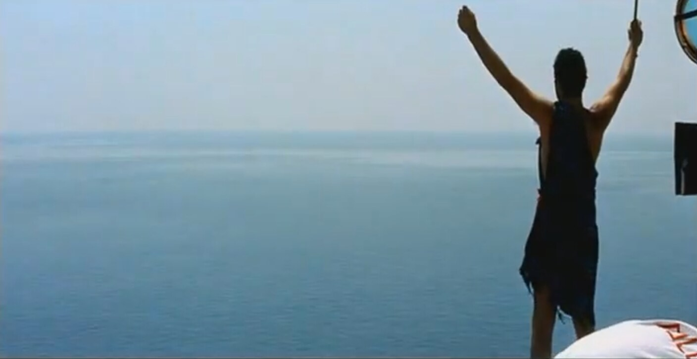
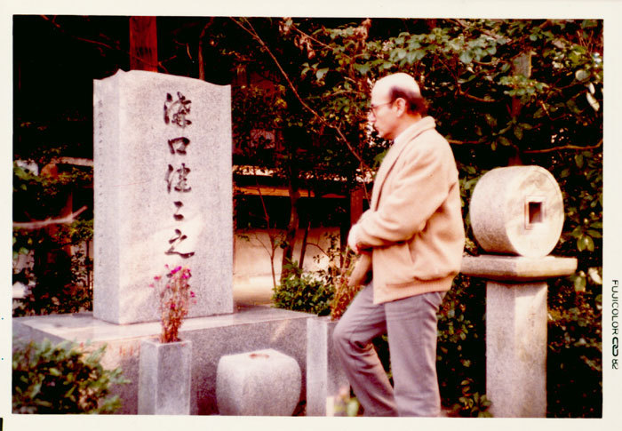